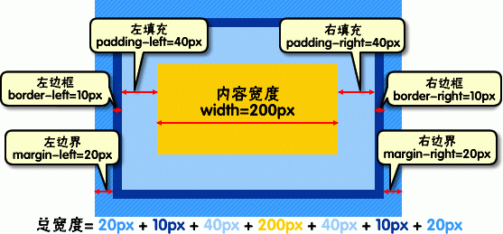

| 参数 | 作用 |
|---|---|
| http-equiv="Content-Type" | 表示描述文档类型 |
| content="text/HTML | 文档类型, 这里为html,如果JS就是text/javascript |
| charset=utf-8 | 页面字符集, 编码, eg:gb2312,iso-8859-1,utf-8 |
meta是html中的元标签, 其中包含了对应html的相关信息, 客户端浏览器或服务器端的程序会根据这些信息进行处理.
HTTP-EQUIV类似于HTTP的头部协议, 它回应给浏览器一些有用的信息, 以帮助正确和精确地显示网页内容.
使用<strong>标签
或者使用<span>标签,但是需要先对<span>标签赋值
还可以使用<em>标签, 但是这样看起来是斜体
使用<b>标签, 可以加粗
这句话被引用了
使用<q>标签标示引用, 默认是增加了一对引号. 但是更加重要的是其中的语义,从而便于浏览器处理
曾经沧海难为水, 除却巫山不是云. 取次花丛懒回顾, 半缘修道半缘君.
默认是在引用的文本两端产生一个缩进
使用<br>换行
曾经沧海难为水,
除却巫山不是云.
取次花丛懒回顾,
半缘修道半缘君.
在源代码中的换行会被忽略掉, 所以这句话写成两段也还是看起来像一段
直接在 源代码 中添加 空格是没有作用的, 这句话有很多空格, 但是看起来却没有很多
使用& n a s p 添加任意数量的空格
使用<hr>标签, 效果如下
使用<address>标签, 同样这个标签的效果不是重点, 重点是其表达的语义信息, 效果如下
本文作者：LiZeC使用<code>标签将一行代码括起来, 从而避免浏览器将其作为代码执行, 但是很遗憾对HTML标签无效, 效果如下
var i = 12 * 34
使用<、>和& 来表示<、>和&
从而可以显示出相关的HTML代码
使用<pre>标签
但是就显示效果来说, 并不满意, 可能需要使用CSS
使用<ul>标签, 以及<li>标签来构建无序列表, ul即unordered list
使用<ol>标签, 以及<li>标签来构建有序列表, ol即ordered list
使用<div>标签
如果没有指定效果, 实际上这个标签没有任何的效果, 也就是说, 这个标签相当于只是一个容器
对于不同的<div>标签, 可以在后面使用一个名为id的属性, 指定其名称
例如本区域被指定为"div_in_101"
使用<table>标签来表示一个表格, 使用<tbody>标签来强制一个表格全部加载后再显示
使用<tr>标签来表示一行, tr即table row. 使用<th>标签来表示表头, th即table head. 使用<td>表示普通单元格, td即table data
注意：一对<th>标签或者一对<td>标签中内容只是表示一个单元格
默认的样式中, 并没有分割线, 且左对齐, 需要使用CSS增强表格的显示
在<table>标签中使用名称为summary的标签来指定表格的摘要, 这是一个语义信息, 没有显示
使用<caption>标签来指定表格标题, 为了使标题显示在表格上方, 因此<caption>标签通常跟在<table>标签后
使用<a>标签, 有两个参数, herf, 即Hypertext Reference, 表示连接的地址, title表示鼠标滑过显示的字符串, 在一对<a>标签之间的内容显示为链接的文本
此外使用target=参数来指定浏览器打开链接的方式,有如下选择
| 参数名 | 效果 |
|---|---|
| _self | 在当前窗体打开链接,此为默认值 |
| _blank | 在新窗口中打开链接 |
| _parent | 在父窗体中打开链接 |
| _top | 在当前窗体打开链接, 并替换当前的整个窗体(框架页) |
四种链接的效果如下
洛天依的萌娘百科 洛天依的萌娘百科 洛天依的萌娘百科 洛天依的萌娘百科同样对于超链接的样式, 也可以通过CSS修改
注意：如果连接的是其他站点, 必须使用完整的URL, 否则默认连接当前服务器的相应位置
<a>标签的另外一个作用就是发送邮件, 通过如下表格中的参数来指定需要的功能

如果mailto后面同时有多个参数的话, 第一个参数必须用?结束, 之后的参数用&隔开, 示例如下
发送使用<img>标签来链接一个图片
| 参数 | 效果 |
|---|---|
| src | 指定图片位置 |
| alt | 图片加载失败时显示的文字 |
| title | 鼠标在图片上显示的文字 |
效果如下

使用<from>标签来包含一段输入, 其中使用<label>或者<input>来构建页面, 默认为流式布局
下面是一个例子
使用<input>标签来包含一个文本框, 其中使用type属性, 指定文本框样式
type可以设置为text、password
如上所示, 仍然可以使用换行的标记进行强制的换行, 但对于对齐不够友好
name属性用于后台PHP程序选择该标签的值, value为该标签显示的值, id用于JS选择该标签
使用<textarea>标签来包含一个文本域, 从而可以输入多行文字, 使用cols和rows设置行数和列数, 注意两个参数都应该是表示数字的字符串
cols和rows也可以在CSS中被设置
在一对<textarea>标签之间的内容会设置为文本域的默认值
使用<input>标签来包含一个输入, 设置type来实现单选或者复选, type可以设置为radio（单）、checkbox（多）
name属性用于后台程序根据名称提取值, value属性用于表示此项被选中时的值,使用checked属性设置是否事先选中
注意：同一组选择框应该设置同样的name名称
注意：同一组选择框应该设置同样的name名称
注意：复选框的name属性的名称后应该加上一对[], 从而使PHP代码中可以将返回变量变成一个数组, 以便于之后PHP程序的遍历
使用<select>标签来包含一段代码, 其中下拉框的每一项的文本包含在一对<option>标签中
<option>标签的value属性和checked属性效果与单选框相同
注意：标签名称为在<select>标签中设置的name属性
使用<input>标签, 将type设置为submit或者reset
value同样为按钮上显示的文字, name为后台程序选中此标签时的名称
单独的使用<label>标签和直接输入文字是完全相同的
可以设置for属性指定一个其他控件的id, 从而点击此标签和点击控件效果相同,具体事例可见本节开始的实例代码
CSS基本格式如下

注意：CSS中每一个属性后面都需要分号隔开
使用/**/进行注释, 注意在各种编辑器中, 都有相关的快捷键可以使用
在每个标签中, 都可以直接使用style参数来指定其样式
例如现在这两行就直接指定为天依蓝了, 并且将字体大小指定为25px
或者是使用嵌入式的CCS, 一般写在<head>标签中
即直接在当前的HTML文件的head中写入相关的CSS
即通过<link>标签来引入一个单独的CSS文件, 写法见当前区域的注释
即选择器的内容为HTML文件的标签
<span>标签可以指定一个名为class的属性, 相当于为这个区域命名
之后通过类选择器, 为这个指定的区域设置样式
注意在写CSS的时候, 使用.类名的方法进行选择
<span>标签可以指定一个名为id的属性,同样可以这个区域命名
之后通过类选择器, 为这个指定的区域设置样式
注意在写CSS的时候, 使用#id名的方法进行选择
通过.类名>子类名可以使一个CSS样式只作用于一个标签的子标签, 类似的, 可以继续接>, 从而只作用于孙标签
将原来的子选择器中的>替换为空格, 即变为对该标签的所有后代标签生效
使用*作为选择器, 使得该样式对所有标签生效
可以给某些动作设置样式,因为当前只能全局设计样式,所以效果见这个页面
使用 , 可以在一行中给多个标签设置同样的属性
在对一个标签使用一个样式的时候, 此样式会自动的应用到其子标签
此特征称为CSS的继承
| 选择器 | 权值 |
|---|---|
| 内联样式表 | 1000 |
| ID 选择器 | 100 |
| Class 类选择器 | 10 |
| HTML 标签选择器 | 1 |
| CSS 继承 | 0.1 |
注意：!important需要和对应语句写在一起, 即只针对某个属性而不针对某个选择器
<div>、<p>、<h1>...<h6>、<ol>、<ul>、<dl>、<table>、<address>、<blockquote> 、<form>
display:block可以使一个内联元素按照块状元素显示
<a>、<span>、<br>、<i>、<em>、<strong>、<label>、<q>、<var>、<cite>、<code>
display:inline可以使一个块状元素按照内联元素显示
<img>、<input>
display:inline-block可以使一个元素按照内联块状元素显示
块状元素都自带换行效果
内联元素都是定义行内小区域且不换行, 但如果没有内容就没有意义, 不占空间
内联块状元素除了不换行, 即使没有内容也会占空间
简单来说就是一个元素不是直接放在页面中, 而是先嵌入到一个容器之中, 然后在吧容器放到页面上
与此同时, 元素与盒子四个边界的距离, 盒子边界的宽度以及不同盒子直接的距离, 都是可以通过参数调节的
由于盒子的隔离, 使得对界面的修改更加的简洁
对于一个边界通常可以设置一下的属性
div{border-width:2px;border-style:solid;border-color:red;}
上述代码可以简写为:
div{border:2px solid red;}
边框的几种常见样式：dashed（虚线）| dotted（点线）| solid（实线）
四个方向份分别是：top、left、right、bottom
四个词和其他名词组成相应的位置, 例如下边界就是border-bottom
边界：border 内填充：padding 外填充：margin
在CSS中使用font-family属性来设置相关的字体(本行被设置为微软雅黑)
如果选定的字体在用户的设备上没有, 则会使用浏览器默认字体
可以通过十六进制代码来指定颜色, 对照图如下所示